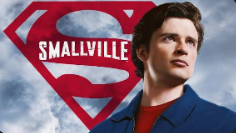

Smallville - As aventuras do super Boy
Smallville é uma série de televisão americana criada por Alfred Gough e Miles Millar, exibida pela The WB (posteriormente The CW) entre 16 de outubro de 2001 e 13 de maio de 2011, com um total de 10 temporadas e 217 episódios. É baseada no personagem Superman da DC Comics, criado por Jerry Siegel e Joe Shuster.
A série conta a trajetória de Clark Kent (Tom Welling), que reside na cidade fictícia de Smallville, Kansas (Pequenopólis, na dublagem brasileira), durante os anos antes dele se tornar o super-herói conhecido como "Superman". A ideia central da série é mostrar como seria a vida do homem de aço e toda a sua trajetória se a sua nave tivesse caído na Terra nos tempos atuais, mesclando a modernidade do século XXI com elementos e valores antigos. Após a quinta temporada, a série se foca em um Clark já adulto e sua carreira no Planeta Diário em Metrópolis. Em Smallville, muitas coisas referentes ao universo Superman e DC são explorados, e vários heróis e vilões conhecidos do universo das histórias em quadrinhos tiveram sua versão na série.
O primeiro episódio
O episódio piloto registrou um total de aproximadamente 8,4 milhões de telespectadores. Ao longo de dez temporadas, a média foi de cerca de 4,34 milhões de telespectadores por episódio, com a segunda temporada tendo a média das classificações mais elevadas, em 6,3 milhões. Até o final de sua temporada, Smallville tinha ultrapassado Stargate SG-1 para se tornar a série de ficção científica norte-americana de mais longa duração (Lugar que agora pertence a série Supernatural, também da Warner) e também a mais longa série baseada em história em quadrinhos na história da televisão.
Sinopse
A primeira temporada tratou-se principalmente de Clark tentando entrar em acordo com sua origem alienígena, e a revelação de que sua chegada na Terra estava conectada com à morte dos pais de Lana Lang. Após a primeira temporada, a série passou a utilizadar menos os vilões da semana em seus episódios, se concentrando mais em arcos de história que afetavam cada personagem e explorando as origens de Clark.
Produção
Originalmente, Tollin / Robbins Produções queria produzir uma série que retratasse a juventude de Bruce Wayne, o milionário que assume a identidade do herói Batman, após a morte de seus pais. Nessa mesma época, a Warner Bros. Pictures decidiu desenvolver um filme de origem para Batman. Temendo que as duas produções pudessem competir entre si, o estúdio não autorizou o uso do personagem e sua história. Em 2000, a produtora decidiu focar suas atenções para outro personagem, e se concentraram no desenvolvimento para um série que retratasse a adolescência do Superman. O personagem já tinha estrelado três produções de seriado de TV. A primeira foi Adventures of Superman, estrelada por George Reeves entre 1952 e 1958, a segunda foi Superboy produzida entre 1988 e 1992, com John Newton, que foi substituído por Gerard Christopher em 1989.
A terceira foi Lois & Clark: The New Adventures of Superman, entre 1993 e 1997, que lançou as carreiras de Dean Cain e Teri Hatcher. Para desenvolver o projeto, a Tollin/Robins, em parceria com a Warner Bros. Television, contratou a dupla de roteiristas Alfred Gough e Miles Millar, que decidiu explorar a história na vida pessoal de Clark Kent, antes de se tornar o Superman, passando como um adolescente que passa pelo processo emocional e psicológico de se tornar um adulto, tendo como carga extra a informação de que nasceu em outro planeta e é dotado de superpoderes.
A série foi filmada no Canadá, na cidade de Cloverdale. Algumas cenas eram filmadas em Vancouver, existe várias locações na região, inclusive a Fazenda Kent. A fazenda fica quase na divisa com os EUA. As coordenadas geográficas da fazenda +49° 1’ 0.09”, -122° 32’ 18.67”. Na cidade de Cloverdale, fica o Talon e um antigo cinema que se chama Clova Cinema que fica na Street, 176 em Victoria, BC, Canadá.
